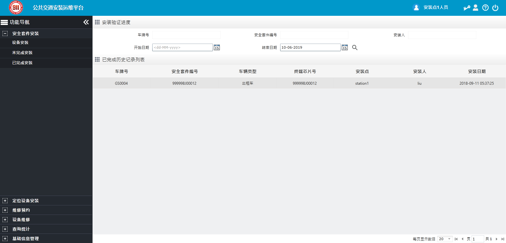

屏幕布局
业务屏按照界面布局可划分为导航控制栏、导航菜单栏和内容显示区，如下图所示。

Fig 91 运维管理员业务屏布局
界面右上方为导航控制栏，可以随时单击对应按钮使用相关功能。
界面左侧为导航菜单栏，包括安全套件安装、定位设备安装、维修预约、设备维修、查询统计和基础信息管理等，可以随时单击对应菜单使用相关功能。
界面右下方为内容显示区，根据左侧选择的菜单不同，可展示不同业务内容。
Parent topic: 运维管理员（管理角色）